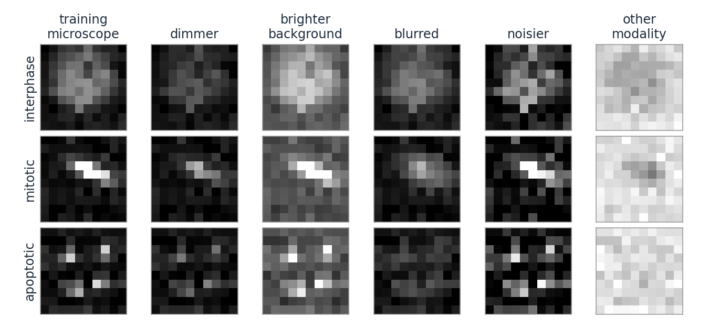
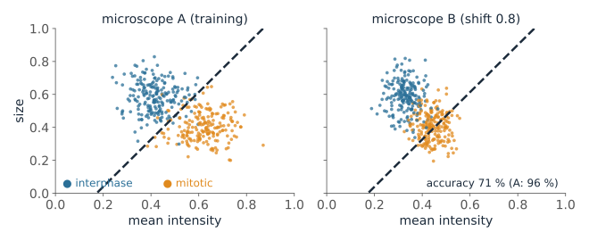
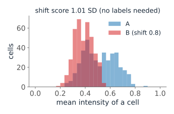

Domain shift and adaptation
About this lecture
A model trained on one microscope, stain or cell line often fails on another. The leakage unit showed how to measure that drop; this unit is about why it happens and what to do.
- What changes between microscopes, and why networks are sensitive to it.
- Detecting a shift without labels.
- Remedies: intensity normalisation, re-estimating normalisation statistics, augmentation, fine-tuning on a few new images.
- Each remedy has a trap; and the evaluation must use held-out experiments.
Slides titled The math give the formulas and proofs; the ideas are complete without them.
The same cells, another microscope

- Brightness and background: lamp, exposure, detector gain, stain batch.
- Blur and pixel size: objective, focus, binning. Noise: exposure time, camera.
- Modality: fluorescence against bright field or stained tissue.
- And the biology: another cell line, another treatment, another share of each class.
Why a trained model breaks
- The model learnt a boundary in its input space. Shift the inputs and the cells move across the boundary, although they are the same cells.
- Here: two features, mean intensity and size. Microscope B is dimmer; the mitotic cells (bright and small) now look like interphase cells: 96 % → 71 %.
- A network’s intermediate statistics shift too: its normalisation layers (the training day) use means and variances from the training images.
- Worst: shortcuts: a feature that predicted the class in training (a brighter plate for the treated wells) and means nothing elsewhere.

The math: kinds of shift
Training data from p_A(\mathbf x, y), use on p_B(\mathbf x, y), with p(\mathbf x, y) = p(y \mid \mathbf x)\,p(\mathbf x) = p(\mathbf x \mid y)\,p(y).
- Covariate shift: p_B(\mathbf x) \ne p_A(\mathbf x) but p(y \mid \mathbf x) the same: the images look different, the rule is the same. Remedies: make the inputs look alike (normalise, augment).
- Label shift: p_B(y) \ne p_A(y) (fewer mitoses), p(\mathbf x \mid y) the same. A calibrated classifier can be corrected by reweighting its outputs with p_B(y)/p_A(y).
- Concept shift: p(y \mid \mathbf x) itself changes (another definition of “mitotic”, another annotator): only new labels help.
- Real shifts mix all three. The microscope change of this unit is a covariate shift in the image that becomes a shift of p(\mathbf x \mid y) in the features.
Detecting a shift without labels
- Compare statistics of A and B: intensity histograms, means and spreads of features (or of a network’s internal features). No labels needed.
- A simple score: \max_k \lvert\bar f_k^B - \bar f_k^A\rvert / s_k^A, the largest mean difference in A’s standard deviations. Here 1.01 at shift 0.8.
- But a change of the class balance also moves the means: with a fifth instead of half of the cells mitotic, the score is 0.37 with no microscope change.
- A network’s confidence is a poor detector: on shifted images it is often confidently wrong.

Remedies
| remedy | needs | fixes | trap |
|---|---|---|---|
| normalise intensities per image or per microscope | nothing | gain, offset | assumes the same mix of cells |
| re-estimate normalisation statistics on B | unlabelled B images | shifts inside the network | the same assumption |
| augment during training | foresight | every variation you simulate | only those; may cost accuracy on A |
| fine-tune on a few labelled B images | 10–100 labels | anything, including concept shift | overfitting; forgetting A |
Always: evaluate on held-out experiments of B, never on the images used to adapt.
Normalisation, and its trap

- Standardising each microscope’s features with its own mean and SD removes any gain and offset exactly: 93 % at every shift (left).
- But it also removes real differences: if B has fewer mitoses, its mean intensity is lower for a biological reason, and normalisation “corrects” it away: 83 % even with no shift at all (right).
The math: re-estimating normalisation statistics
A normalisation layer (batch norm in inference mode) stores the mean \mu_j and variance \sigma_j^2 of unit j over the training data, and computes
\hat z_j = \gamma_j\,\frac{z_j - \mu_j}{\sqrt{\sigma_j^2 + \epsilon}} + \beta_j
- On B the unit’s activations have other statistics (\mu_j^B, \sigma_j^B). Re-estimating them on unlabelled B images (forward passes, no training) and using them instead maps B’s activations back to the range the next layer expects: for a gain g and offset o on z_j the correction is exact.
- It is the per-feature standardisation of the demo, applied inside the network, layer by layer.
- Same trap: it also normalises away genuine differences of B’s population; it needs enough B images (statistics of 8 images are noisy).
Augmentation: show the variation in training
- Train on A with random gains, offsets, blur, noise, so that the model learns to ignore them (augmentation unit).
- In the demo, random intensity gains (0.4 to 1.2) and offsets make the classifier rely mostly on size: robust under shift (85 % at shift 0.8 instead of 71 %), and independent of B’s class balance.
- The price: intensity was informative: on A itself 90 % instead of 96 %.
- It only helps with variations you thought of; a new modality is not a brighter version of the old one.
Fine-tuning on a few images of B
- Annotate a few B images and fine-tune the A model on them: the transfer and strategies units, with the A model as the pretrained network.
- In the demo: 10 labelled B cells (5 of each class), logistic regression pulled towards the A weights: 93 % at shift 0.8, and 91 % when B has fewer mitoses (where normalisation gave 83 %).
- It handles any kind of shift, including changes of the biology, because it uses B’s labels.
- Keep the A model, or check it on A again: fine-tuning forgets.
Try it: two microscopes
Evaluate on held-out experiments
- Adapting to B uses B’s images (unlabelled for normalisation, labelled for fine-tuning). Test on other B images: other wells, slides, days, not the ones used to adapt.
- Split by the unit you will generalise over: if the method must work on new microscopes, hold out a whole microscope (or site), not images of the same one (leakage unit: by image 92.2 %, by day 86.8 %).
- Report the accuracy per domain, not pooled: a mean over A and B hides a failure on B.
Re-estimating statistics as pseudocode
model trained on microscope A, with normalisation layers (stored mean, variance per unit)
collect unlabelled images of microscope B (dozens, from several experiments)
for every normalisation layer, from the input to the output:
run the B images through the network up to this layer
mean_B[j], var_B[j] = mean and variance of unit j over all B images and positions
replace the stored mean and variance by mean_B, var_B
# no weights are trained; check on held-out labelled B images- Layer by layer, because each layer’s statistics depend on the corrected layers before it.
- The coding exercise does the same with two features: statistics, standardisation, a shift score and augmentation.
Summary
| Idea | In one line |
|---|---|
| Domain shift | the same cells measured differently: inputs cross the learnt boundary |
| Detection | compare feature statistics of A and B; no labels needed, but class balance moves them too |
| Normalisation | per microscope removes gain and offset; also removes real population differences |
| Re-estimated statistics | normalisation inside the network, from unlabelled B images |
| Augmentation | robust to simulated variations only; may cost accuracy on A |
| Fine-tuning | a few labelled B images fix any shift; keep testing on A and B |
| Evaluation | held-out experiments of each domain, reported per domain |
This closes the day. The diffusion day turns from analysing images to generating them.